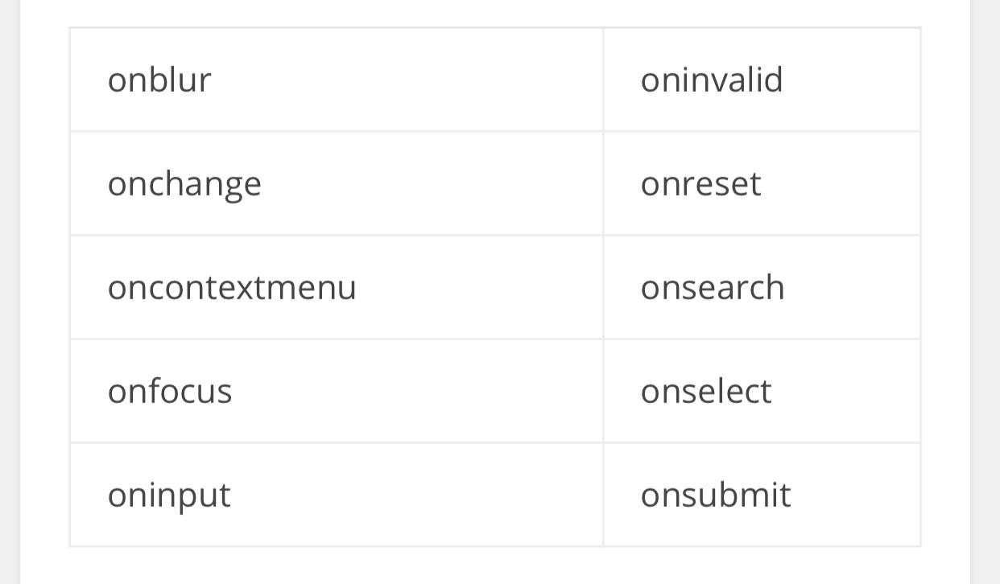

Document Object Model’in kısaltılmışı olan DOM, asla bir dil olmayıp, dilleri barındıran bir standart olarak tanımlanmaktadır.
Programlama dillerinin Object-Orientated olarak HTML ile anlaşması için HTML’i nesneler bütününe çevirecek bir ara standart gereklidir. DOM da tam bu noktada işe el atmaktadır. DOM, HTML ile programlama dilleri arasında bir standart oluşturarak bu dillerin HTML den bilgi alıp, bilgi vermesine yardımcı olur. DOM, Nesneler ve özelliklerden oluşur.
DOM da nesnelerin birer öğe (element) olarak kullanılabilmesi için hiyerarşik bir düzen izlenerek çağrılmaları gerekir. HTML’deki her bir elamanın birbiri ile hiyearşik bir yapı oluşturması ile oluşur.

NELER YAPAR?
DOM bir ağaç dizini gibi bütün dokümanları birbirine bağlar. Birden fazla programlama dilleri destekler(JS, PHP, Java, ASP vb.) ve aynı zamanda dosya oluşturmak, elementleri ve içeriklerini silme/ekleme gibi fonsiyonları vardır.
DOM (Document Object Model / Belge Nesne Modeli), HTML, XHTML, XML gibi belgelerin script dilleriyle iletişim kurabilmesini sağlamak için geliştirilmiş bir arabirimdir ve W3C (World Wide Web Consortium) standardıdır. W3C, DOM tanımını şu şekilde yapmaktadır: “W3C Document Object Model (DOM), programların ve komut dosyalarının bir belgenin içeriğine, yapısına ve stiline dinamik olarak erişmesini ve güncellemesini sağlayan bir platform ve dilden bağımsız bir arayüzdür.”
Programlama dilleriyle ilgili pek çok içerik ve anlatımda karşımıza çıkan Object-Oriented (Nesne Yönelimli) yaklaşımı da bu yapıya benzerdir. Bu anlamda, internet tarayıcıları vasıtasıyla görüntülediğimiz internet sayfalarını belge, bu belgelerde (sayfalarda) yer alan tüm elemanları (etiket/tag) da nesne olarak nitelendirebiliriz. Buna göre resim, yazı, form gibi tüm elemanlar nesnedir.
DOM sayesinde, örneğin bir JavaScript kodu vasıtasıyla sayfa içindeki herhangi bir nesnenin özelliğine müdahale edebilir, bu özellikleri okuyabilir ve aktarabiliriz. Aşağıdaki örnek koda baktığımızda head etiketleri arasında bir CSS ve bir de JS (JavaScript) kodu görmekteyiz. CSS kodu body etiketi arasında yer alan div ile ilişkili olarak ilgili etikete bir stil (border:1px solid #ddd; margin: 20px; padding: 20px;) atamaktadır. JS kodu ise, ID değeri üzerinden (document.getElementById) yakalamakta ve mouse hareketlerine göre (onmouseover ve onclick) fonksiyon aracılığıyla (changeColor()) CSS ile atanan stil yerine kendi içeriğinde tanımlanan stil özelliklerini div etiketine uygulamaktadır.
WİNDOW OLAY NİTELİĞİ
FORM OLAYLARI
KLAVYE OLAYLARI
FARE OLAYLARI
PANO OLAYLARI
Document Nesnesi
JavaScript ile web sayfamızdaki etiketlerin ve form elemanlarının içeriklerine-değerlerine ulaşmak, bunlarla işlem yapmak ve değiştirmek isteyebiliriz.
Özellikle form elemanlarına ziyaretçiler tarafından girilen bilgilere ulaşmaya sıkça ihtiyaç duyarız.
JavaScript'te çeşitli metotlar kullanarak html etiketlerinin içerik ve özelliklerine ulaşabilir ve istersek bu özellikleri değiştirebiliriz.
Bu metotlardan bazıları şunlardır.
getElementById Metodu
Web sayfasındaki html etiketlerine ulaşmak için en çok kullanılan metotlardan biridir. Ulaşılmak istenen html nesnesinin id'si belirtilerek, ilgili elemana ulaşmamızı sağlar.
Örneğin k1 isimli metin kutusunun içindeki değere şu şekilde ulaşabiliriz:
Benzer şekilde istenen elemanın stil özellikleri, innerHtml özelliği gibi birçok özelliğine erişilerek değişiklik yapılabilir.
innerHTML Özelliği
Body kısmında yer alan bir html etiketinin içeriğini değiştirmemizi sağlar.
Örnek: Sayfamızda id'si "sonuc" olan bir p etiketi bulunsun. Bu etiket içerisine birşeyler yazdırmak istersek şu satırı kullanabiliriz:
innerHTML özelliği ile sayfanın istenen yerine Html kodları da ekleyebilriz.
JavaScript ile sayfaya html kodları eklerken, tırnak işaretlerini karıştırırsak sorun yaşarız. Bu nedenle çift tırnak içerisinde tekrar tırnak işareti kullanmamız gerekirse, içteki tırnak işaretlerini tek tırnak olarak yazmalıyız.
Hatırlatma: JavaScript büyük küçük harfe duyarlı bir dildir. Ayrıca html'de olduğu gibi komut satırlarını yazarken her istediğimiz yerde alt satıra geçemeyiz. JavaScript komut satırları nokta (.) ve eşittir (=) gibi karakterlerden sonra bölünebilmekteyken, komutlar, tırnak içleri ve benzeri ifadeler bölünerek alta geçilmemelidir.
getElementsByClassName Metodu
Id özelliği her etiket için farklı olması gereken bir özelliktir. Bu durumda getElementById metodu ile aynı anda birden fazla elemana ulaşmamız mümkün değildir.
Class özelliği ise sayfada bir çok etikete uygulanmış olabilir. Sayfada aynı class'ın uygulandığı tüm elemanlar ile işlem yapmak istersek getElementsByClassName metodunu kullanabiliriz.
Bu metotta parantez içinde aradığımız class adı yazılır, devamında ise köşeli parantez içerisinde o class'a sahip elemanlar içindeki kaçıncı elemana ulaşacağımız belirtilir.
Örneğin;
Yukarıdaki satırda .yazi class'ı uygulanmış ilk elemana ulaşılacaktır. İndex numaraları her zaman 0'dan başlar.
Sayfada aynı class'ın uygulandığı tüm elemanlara ulaşmak ve işlem yapmak istersek bir döngü kullanabiliriz.
Örnek: Aşağıdaki örnekte .yazi class'ı uygulanmış tüm elemanların metin rengi değiştirilmiştir.
getElementsByName Metodu
Şayet id'ye göre değil de name özelliğine göre bir html nesnesine ulaşmak istersek getElementsByName metodunu kullanabiliriz. Kullanımı bir üstte anlatılan getElementsByClassName metoduna benzer. Ulaşılmak istenilen elemanın index numarasının da belirtilmesi gerekir.
Örnek:
Köşeli parantez içinde belirttiğimiz index numarası, o sayfada belirttiğimiz name özelliğine sahip elemanlardan kaçıncı sıradakinin alınacağını belirtmiş olur. İndeks numarası 0'dan başlar.
Bu örnekte name özelliği "kutu" olan ilk html elemanına ulaşılacaktır.
Form ve Nesne Adları Kullanılarak Form Elemanlarının Değerine Ulaşma
Sayfamızdaki html formu içindeki elemanların değerlerine şu şekilde de ulaşabiliriz.
Örnek:
Aşağıdaki gibi bir html formumuz olsun:
Formun adı form1, ulaşmak istediğimiz metin kutusunun adı ise kutu1 olduğu için;